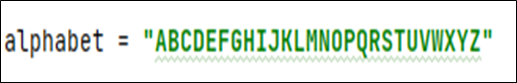
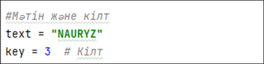
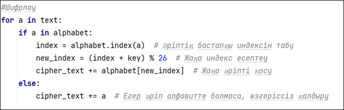
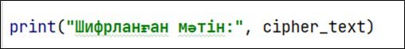

Кіріспе
Цезарь шифрі – бұл қарапайым ауыстыру шифрі, онда әрбір әріп алфавитте белгілі бір қадамға (кілтке) жылжытылады. Егер кілт 3 болса, онда "A" әрпі "D" болады. Бұл әдіс ежелгі Рим қолбасшысы Юлий Цезарь қолданғандықтан оның атымен аталады.
Бұл жерде біз Nauryz сөзін 3 қадамға жылжытып, Цезарь шифрін Python тілінде жүзеге асырамыз.
1. Алфавитті анықтау
Цезарь шифрі тек әріптерді шифрлайды, сондықтан алдымен ағылшын алфавитін енгіземіз:
2. Ашық мәтін мен кілтті дайындау
Ашық мәтініміз: "Nauryz"
Кілт: 3
3. Әр әріпті шифрлау
Цезарь шифрі әр әріптің орнын жылжыту арқылы орындалады.
4. Шифрланған мәтін
Шифрлау нәтижесі: "NAURYZ" → "QDXUCB"
5. ҚОРЫТЫНДЫ
Біз Python-да Цезарь шифрін орындадық.
Nauryz сөзін 3 қадамға жылжытып, QDXUCB шифрланған мәтінін алдық.
Цезарь шифрі – қарапайым, бірақ шифрды бұзу оңай әдіс. Қазіргі криптографияда оның орнына күрделі шифрлар қолданылады, бірақ оқу мақсатында бұл әдіс те пайдалы.
ПРАКТИКАЛЫҚ ТАПСЫРМАЛАР
1-тапсырма: Шифрлау
Өз есімінізді Цезарь шифрін қолданып шифрлаңыз.
КІЛТ - 6
2-тапсырма: Дешифрлау
Мысалдағы "QDXUCB" шифрланған мәтінін дешифрлайтын бағдарлама құрыңыз.
3-тапсырма: Шифрлау
Қазақша алфавит құрып, "КРИПТОГРАФИЯ" сөзін шифрлаңыз.
КІЛТ - 5